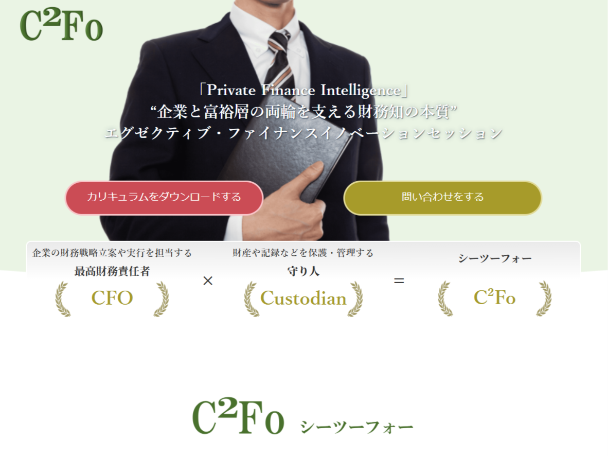
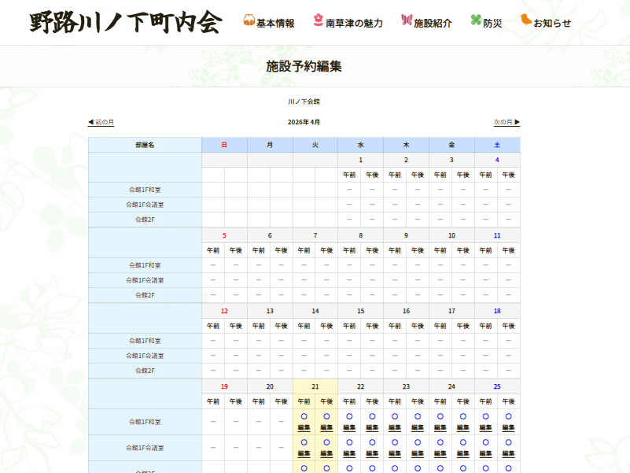
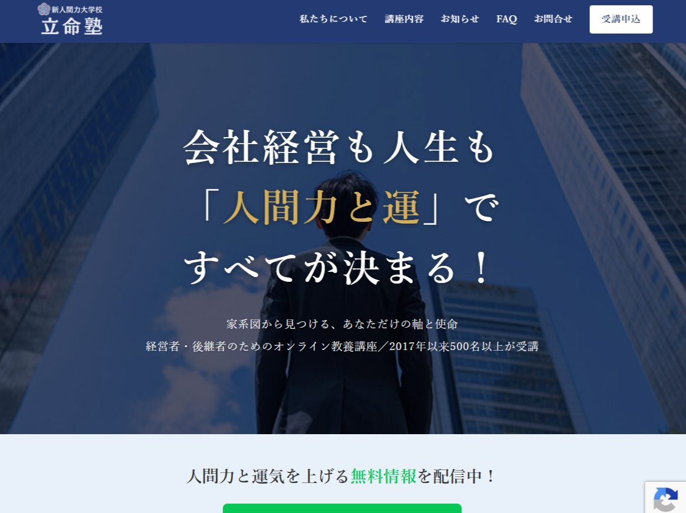
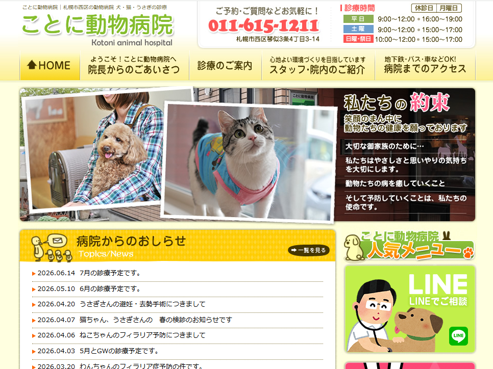
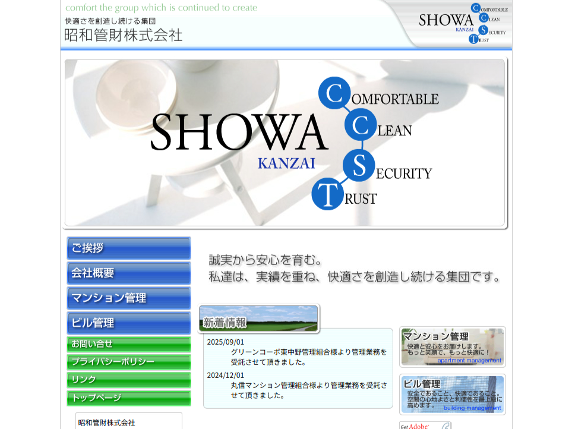
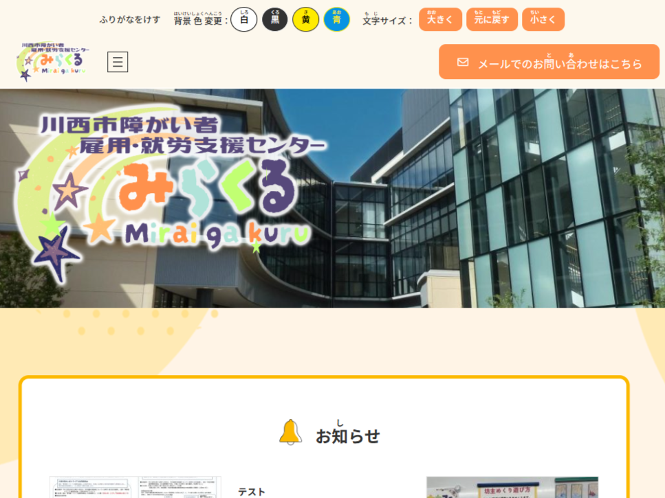

長津田アオバ矯正歯科 診療日カレンダー
PHP , SQL , 自作Wordpressプラグイン
制作期間：約10日
フッターにある診療カレンダーの内容表示及び登録画面の制作
データベース管理とし、Wordpressのプラグインとして実装
制作実績

PHP , SQL , 自作Wordpressプラグイン
制作期間：約10日
フッターにある診療カレンダーの内容表示及び登録画面の制作
データベース管理とし、Wordpressのプラグインとして実装

Wordpress , elementor
制作期間：約2ヶ月
デザイン制作は他の方が担当し、ヘッダー、フッター、お問い合わせページを除くサイト全体をWordpressプラグインであるelementorを用いて再現制作を担当
サイトリンクはこちら

Figma
制作期間：約2週間
サイトリニューアル提案に伴うデザイン案の制作
おおまかなイメージを伝えるためトップページのみ

Wordpress , X-T9 , LPtools
制作期間：約2週間
リンク先はX-T9を使用したもの
LPtoolsの使用感検証のために利用したため2パターン存在

PHP , SQL , 自作Wordpressプラグイン
制作期間：約1週間
各施設、各部屋、各日時に予約が入っているかをカレンダー形式で確認できるページの作成及び予約内容登録ページの作成
現在は使用されていない模様



HTML , CSS , PHP , SQL
制作期間：約1週間
文字コードをShift-JISからUTF-8へ変更
ブログ機能やメール機能はaspx.vbやvbからphpとSQLへ書き換え

Wordpress , Javascript , CSS , 自作Wordpressプラグイン
制作期間：約1か月
既存サイトにルビふり、配色変更、文字サイズ変更、読み上げ機能の追加実装可否を検証
機能追加に伴うデザイン変更案制作